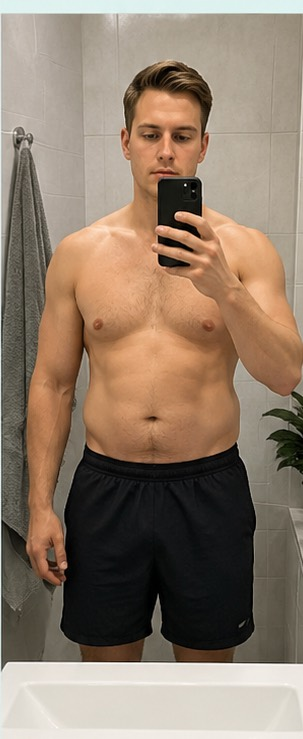
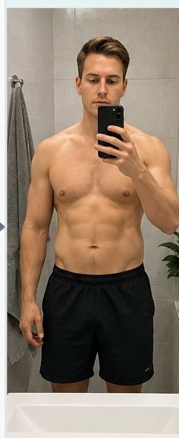
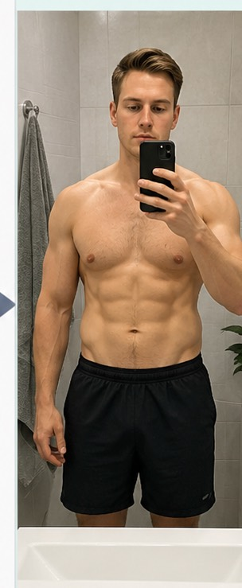

1
Første nye øvelse. Den bygger bein og hofter uten utstyr.
Bruksanvisning
Slik bruker du appen for å bygge daglig trening, følge progresjon og jobbe mot ett sammenhengende sett på 100 gode pushups og situps.
1. Kom i gang
Åpne marents.no/trening/ i Safari eller bruk appikonet på Hjem-skjermen.
Brukernavn og passord trengs normalt bare første gang. Etterpå husker appen innloggingen lokalt på iPhone.
Safari → delingsknappen → Legg til på Hjem-skjerm → åpne WB Trene fra ikonet.
2. Hovedmål
Målet er ikke bare å gjøre 100 totalt. Målet er 1 x 100: ett sammenhengende hovedsett med gode reps.
Viktig: Totalen viser treningsmengde. Hovedsettet viser hvor nær du er 1 x 100.
3. Begreper
Første sammenhengende sett. Dette tallet teller mot 1 x 100.
Hovedsett pluss støtte-sett. Brukes for å se treningsmengde.
Ekstra sett etter pause. De bygger kapasitet uten å ødelegge teknikken i hovedsettet.
Trykk på ? i appen for å få forklaring i et tydelig overlay.
4. Dagens økt
Hovedsett: 24. Støtte etter pause: 2 x 12. Målet er etter hvert å slå dette sammen mot 1 x 100.
Samme modell: ett hovedsett først, støtte-sett etter pause.
Stopp når teknikken faller. Ikke press frem stygge reps.
Støtte-sett gir volum og kapasitet.
Skriv hovedsett og total. Riktige tall gir bedre progresjon.
Streak, XP, statistikk og coach-feedback oppdateres.
5. Statistikk
Hvor mange av de siste sju dagene som er fullført.
Grafen følger hovedsettet, fordi det er veien mot 1 x 100.
Pushups og situps totalt viser hvor mye arbeid som er gjort.
Motivasjon for gjennomføring. Ikke viktigere enn teknikk.
6. Bilder fra speilet
Legg inn startbilde og nytt bilde hver 10. økt. Bruk samme lys, speil, avstand og vinkel.

Start
Økt 10
Økt 207. Planen
Hovedsettet er viktigst. Støtte-sett holder volumet oppe uten dårlig teknikk.
Hovedsettet øker gradvis. Støtte-settene gir ekstra trening etter pause.
Mer kapasitet flyttes inn i første sett. Støtte-settene blir mindre viktige.
1 x 100 pushups og 1 x 100 situps med god form.
8. Kommende øvelser
Når målet er nådd på de to første øvelsene, kan WB Trene bygges videre med nye øvelser. Du kan også legge til øvelser tidligere ved å trykke på +-knappen i appen.
Første nye øvelse. Den bygger bein og hofter uten utstyr.
Trener ett bein om gangen og avslører forskjeller i balanse og styrke.
Gir bedre kjerne, pushup-stabilitet og kontroll.
Styrker sidene av magen og gjør kroppen mer stabil.
Balanserer magearbeidet med trening for rygg og bakside.
Kombinerer kjerne, skuldre og puls.
Ekstra trening for triceps, skuldre og press-styrke.
Mer avansert magekontroll for stramme, gode repetisjoner.
Kan brukes som kondisjon og helkroppsutfordring.
Legger inn trekk-styrke som balanserer all press-treningen.
9. Fakta
Fakta-delen viser ett kort om gangen. Sveip sidelengs for flere kort om hypertrofi, failure, form, pauser, mat, søvn og viljestyrke.
Hovedregel: God form og jevn gjennomføring slår tilfeldige maksøkter.
10. Innstillinger
Velg tidspunkt for varsling hvis økten ikke er gjort.
Skjult etter oppsett. Trykk Endre startnivå hvis tallene faktisk må rettes.
Send forespørsel om egen konto for en kompis.
Logg kan eksporteres som JSON for backup eller analyse.
11. Gode regler
Stopp hovedsettet når formen faller.
Støtte-sett kan tas etter pause. Det er ikke juks.
En ærlig minimumsøkt trener viljestyrke.
Trening gir signalet. Mat, vann og søvn bygger resultatet.